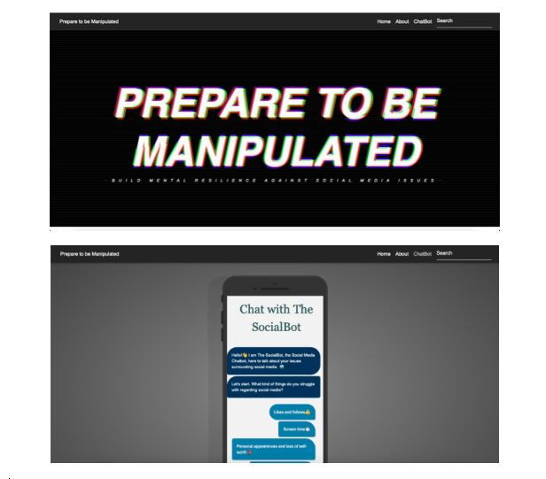
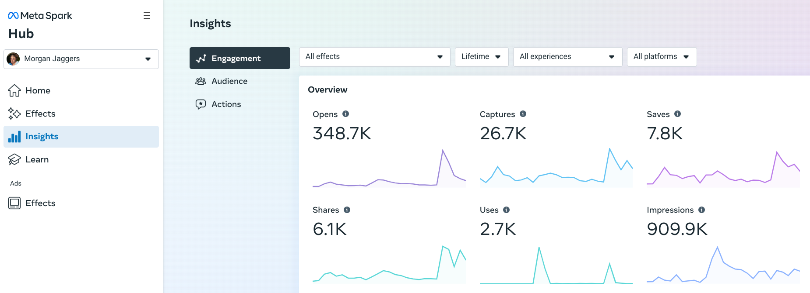

Morgan Jaggers Portfolio
Get in contact with me for the whole transcript of this code. Until then, please check out this video showcasing the website.
Click here to take you to the site

Click here to take you to the application
Click here to take you to the reel showcasing my current live filters
*Insights below as of 31st May 2023*

Click here to take you to the prototype page on Instagram
Click on the images below to expand: